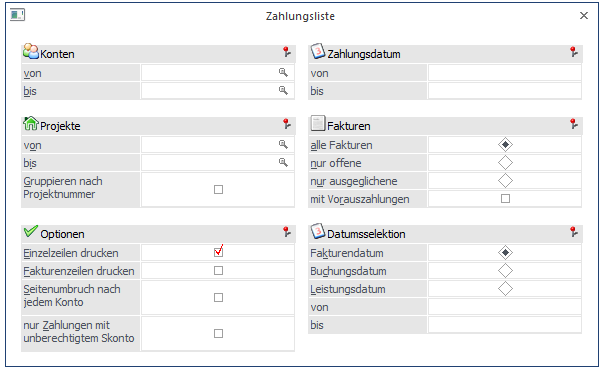
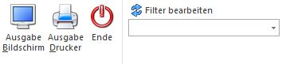
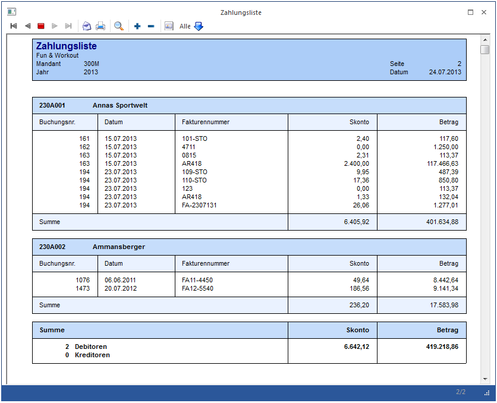

Über den Menüpunkt
1 Auswertungen
1 Offene Posten
1 Zahlungsliste
kann eine Liste von durchgeführten Zahlungen (auf Basis der Offenen Posten) ausgewertet werden.

Selektionsmöglichkeiten
Ø Konten von - bis
Hier kann eine Einschränkung der Konten vorgenommen werden, für die die Auswertung durchgeführt werden soll. Es können sowohl Kunden als auch Lieferanten eingeschränkt werden. Über die Matchcode-Funktion kann nach allen Kunden/Lieferanten gesucht werden.
Ø Projekte von - bis
Einschränkung der Projekte, die ausgewertet werden sollen. Dabei wird auf die Projekte abgeprüft, die beim Buchen in der Offenen Post hinterlegt wurden (bzw. aus der WinLine FAKT übernommen wurden).
Ø Gruppieren nach Projektnummer
Wird diese Option aktiviert, dann werden Zahlungen mit der gleichen Projektnummer zusammengefasst, wobei pro Projekt dann je eine Überschrift (mit der Projektnummer und dem Projektnamen) und eine Summenzeile eingefügt wird.
Optionen
Ø Einzelzeilen drucken
Wenn diese Option aktiviert ist, dann wird jeder Zahlungsdatensatz einzeln angedruckt. Bleibt die Option deaktiviert, dann wird pro Konto nur eine Summenzeile angezeigt.
Ø Fakturenzeile drucken
Diese Option kann nur aktiviert werden, wenn auch die Option "Einzelzeilen drucken" aktiviert ist. Damit wird zusätzlich zur Zahlungszeile auch noch die Fakturenzeile mit ausgewiesen.
Ø Seitenumbruch nach jedem Konto
Diese Option kann nur aktiviert werden, wenn auch die Option "Einzelzeilen drucken" aktiviert ist. Dadurch wird nach jedem Konto ein Seitenumbruch eingefügt, so dass man ein "Kontoblatt" ausgeben kann.
Ø nur Zahlungen mit unberechtigtem Skonto
Wenn diese Option aktiviert ist, dann werden nur die Zahlungen ausgewiesen, wo der Skontobetrag nicht den Einstellungen der OP entspricht, also z.B. wenn der abgezogene Skonto höher ist, als der, der sich anhand der Zahlungskonditionen ergibt, oder wenn Skonto abgezogen wurde, obwohl die Skontofrist schon abgelaufen ist. Bei Verwendung dieser Option wird der berechtigte Skonto auch in einer eigenen Spalte angezeigt.
Ø Zahlungsdatum von - bis
Über diese Felder kann der Datumsbereich eingeschränkt werden, für den die Zahlungen ausgewertet werden sollen. D.h. wenn hier ein Datum eingegeben wird, dann werden nur die Zahlungen berücksichtigt, die in diesem Zeitraum getätigt wurden.
Fakturen
In diesem Bereich kann der Umfang der Fakturen ausgewählt werden, wobei folgenden Optionen zur Verfügung stehen:
ü alle Fakturen
Es werden alle
Rechnungen ausgewertet
ü nur offene
Es werden nur die
Rechnungen ausgewertet, für die bereits eine Teilzahlung vorhanden ist.
ü nur ausgeglichene
Es werden nur
die Rechnungen ausgewertet, die bereits komplett bezahlt wurden.
Ø mit Vorauszahlungen
Wenn diese Option aktiviert ist, dann werden in der Auswertung auch alle Vorauszahlungen mit berücksichtigt.
Datumsselektion
Zusätzlich zur Einschränkung des Zahlungszeitraumes gibt es auch noch die Möglichkeit, auf das Datum der Rechnung einzuschränken, wobei es hier wieder 3 Möglichkeiten gibt:
ü Fakturendatum
Es kann nach dem
Datum der Rechnung eingeschränkt werden.
ü Buchungsdatum
Es kann nach dem
Datum der Buchung eingeschränkt werden.
ü Leistungsdatum
Es kann nach dem
Leistungsdatum eingeschränkt werden (das Leistungsdatum kann in der "normalen"
Buchungstabelle erfasst werden, wenn Abgrenzungskonten verwendet werden).
Buttons

Ø Ausgabe Bildschirm/Drucker
Es kann entschieden werden, ob die Ausgabe auf Bildschirm oder Drucker erfolgen soll. Mit dem Ausgabe Bildschirm/Drucker-Button oder durch Drücken der Taste F5 wird die Auswertung gestartet.
Ø Ende-Button
Mit dem Ende-Button oder durch Drücken der ESC-Taste schließen Sie das Fenster.
Ø Filter bearbeiten
Durch die Verwendung des Buttons wird der Filter aufgerufen.
Am Ende der Auswertung wird eine Gesamtsumme der Skonto- und Zahlungsbeträge für Debitoren und Kreditoren angedruckt.
Beispiel für eine Zahlungsliste:
